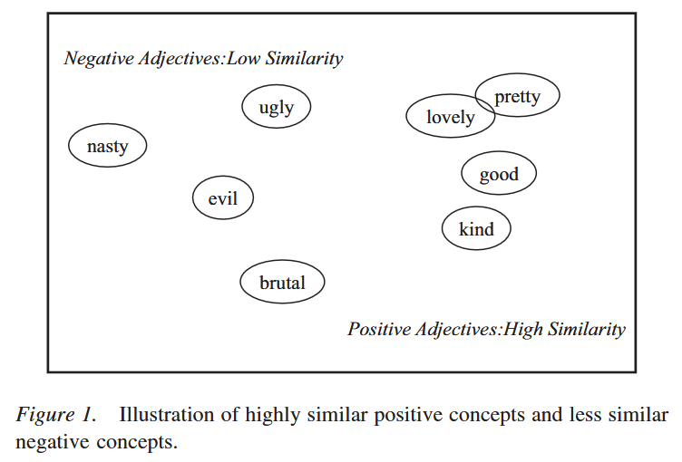
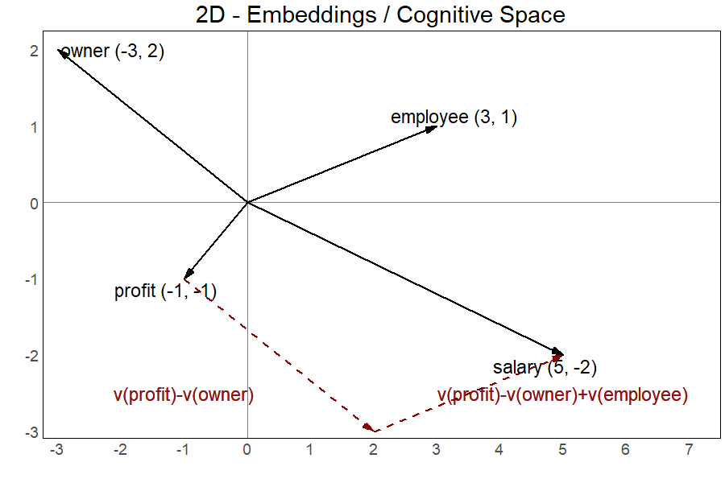
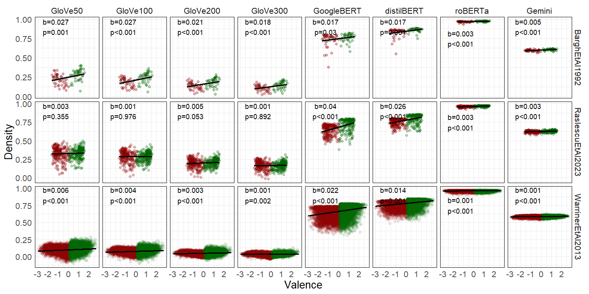

LLM Cognition
Why Human Cognition and LLMs are so similar?
Large Language Models (LLMs) are not surrogates of the human mind. They are biologically inspired systems attempting to mimic a single function of the human mind, language. Even reasoning models do not possess most of the cognitive function necessary to think. Yet, they replicate human behavior (in language) so well that they can serve us in understanding how some cognitive functions operates. With this project, I leverage LLMs to explore the cognitvie space and to understand why it is structured the way it is.
The Density Hypothesis
My investigation is pointed toward the Density Hypothesis. This is a simple yet powerful statement about how concepts are arranged in our mind. The Density Hypothesis simply states that positive concepts are more similar to each others, they are more densely clustered within the cognitive space. Therefore, negative concepts are more different to each other, they are more spread out.

The picture above, from Unkelbach et al. (2008) depicts exactly that, and provides a rough idea of what the cognitive space is.
The congitive space is a multidimensional space in which all the concepts we know are arranged. The meaning of each dimension is unknown, but our mind use them to locate each concept. According yo the Density Hypothesis, positive concepts are closer to each others while the negative ones are very spread out.
That's why "love" and "pretty" are so close to each other, and why "nasty" and "brutal" are so far apart.
If the Density Hypotheis hypotheis is true, discriminating among positive concepts should be more difficult and therefore, we might confuse one for another. This is exactly what we observe.
Similarly, categorizing positive concepts should be easier and therefore, quicker. This is exactly what we observe.
There is considerable evidence suggesting that the Density Hypothesis is true. However, the Density Hypothesis was bounded to remain an hypothesis as we couldn't directly access the cognitive space, until LLMs came along.
Cognitive Space in LLMs
LLMs have their own version of the cognitive space. Each concept, or token in LLM terms, is represented as a dot in a multidimensional space called embedding space. Before LLMs, researchers created static embedding spaces in which they placed all words available in their traing corpora. This is why those embeddings are ofter referred to as word embeddings. A classical example of this is GloVe, a model in which each word has its own GLObal VEctor containing its coordinates. The beauty of these embeddings is that their topology allows to represents meanings and to jump from one word to another based on their meaning. Let's look at the analogy example in the 2D space below.

Intuitively, we know that a company owner's compensation is the profit generated by the company. With an analogy, we can say that an employees' compensation is their salary. The embedding space allow us to discover what is the employee's compensation starting from our knowledge that the owner's compensation is the company's profit. To do that, we just need some simple linear algebra.
We know that the profit is for the owner what X is for the employee. So, if we start from V(profit), the vector representing the position of "profit" in the embeddings, and subtract V(owner), the vector for "owner", we'll land on a point in the space from where we just need to add V(employee), the vector for "employee", to land exactly where our X is supposed to be. On X, we'll find ourselves on the vector for "salary", V(salary), which is for an employer what profit is for an owner.
In one simple step:
V(profit) - V(owner) + V(employee) = V(salary)
This is more than a simple fun fact! It means that the if the embedding space is the LLMs' homologous of our own mind's cognitive space, we can use LLMs to address some important research questions about human cognition and how we represent the world around us within our minds. All of a sudden, testing the Density Hypothesis is within reach!This is why I already put together some preliminary findings which looks really really promising!
Preliminary Results
These last few months, I collected a few wordlists, published along their normative data (at least, in terms of valence), and a bunch of publicly available embedding models.
The wordlists are Bargh et al. (1992), 92 words historically used to investigate the Density Hypothesis, Raslescu et al. (2023), 300 personality descriptors specifically selected as stimuli for personality research, and Warriner et al. (2013), a collection of almost 14000 words from the English dictionary designed to be the most comprehensive wordlist for research in linguistics.
The embedding models are four flavor of GloVe by Pennington et al. (2014), which comes with embeddings of 50, 100, 200, 300 dimensions, the original BERT by Devlin et al. (2019), the grandfather of all transformer-based LLMs, its distilled version DistilBERT by Sanh et al (2019), the grandfather of all transformer-based LLMs, another version of BERT which was substantially overtrained, RoBERTa by Liu et al. (2019),
and the state of the art at the time of writing (spring 2025), Google's Gemini by Lee et al. (2025).
For each word in each wordlist, I simply extracted its embeddings from each of the embedding models. Then, I computed each word's density as the average cosine similarity between the word and each other in its valence cluster. From there, simple regressions tested the key idea behind the Density Hypothesis, words rated as more positive show higher density in terms of higher similarity.

These correlational results are striking! Valence predicts the word's density with slopes in the expected (positive) direction and reaching significance.
The only exception is the wordlist from Raslescu et al. (2023) with the embeddings coming from all four GloVe versions.
But there is a reason for that. Global embeddings are trained to overfit the training corpus as they are allegedly trained on all possible words. Therefore, they must show poor performance on unusual or niche words such as, for example, personality descriptors deliberatedly selected for a speficif purpose other than talking in plain language.
Contextual embeddings, such those from the other embedding models, or more common words, such as those historically used to investigate the Density Hypothesis and those coming from the most comprehensive wordlist available, perfectly produce the expected pattern predicted by the Density Hypothesis.
What's next?
Now, as this approach doesn't allow for causal claims, the next steps is to introduce manipulated conditions for a proper causal investigation of the Density Hypothesis using LLMs. Specifically, I'll move to the generative component of LLMs by asking a few of them to write positive and negative descriptions of a smart-phone and a person.
This will generate data for a positive and a negative manipulated condition allowing me to test if LLMs reproduce the Density Hypothesis' prediction in their generative production.
Finally, it will be time to test the Brunswikian explanation of the Density Hypothesis. Obviously, testing the evolutionary explanation of the Density Hypothesis doesn't make sense, as LLMs are not exposed to the same evolutionary pressure faced by our own cognitive space.
To do that, I'll create a positive and a negative training corpus to train embedding models. If the Brunswikian explanation is correct, the positive corpus will produce the typical density pattern while the negative one will produce the opposite one (with negative concepts more densely clustered than positive concepts).
If you want to know more, you can join my symposium at the General Meeting of the European Association of Social Psychology in Strasbourg. Alternatively, you can find me in Cologne during the fall semester 2026 where, I'll visit the Social Cognition Center Cologne as an International Fellow thanks to a program funded by the Center for Social and Economic Behavior.
Related Publications
Biella, M., & Batzdorfer, V. (2026). Editorial: The phenomenon of misinformation in different domains and by various disciplines. Frontiers in Psychology.
Biella, M., & Hütter, M. (2026). Navigating the Social Environment: A Sampling Approach to Trustworthiness. Personality and Social Psychology Bulletin.
Biella, M., Gemignani, A., Conversano, C., Miniati, M., & Orrù, G. (2025). Psychometric Assessment of the Italian Version of the Vaccination Attitudes Examination (VAX) Scale and Exploration of its Link with Policy Endorsement. Collabra: Psychology.
Biella, M., Orrù, G., Ciacchini, R., Conversano, C., Marazziti, D., & Gemignani A. (2023). Anti-vaccination attitude and vaccination intentions against COVID-19: a retrospective cross-sectional study investigating the role of media consumption. Clinical Neuropsychiatry.
Batzdorfer, V., Steinmetz, H., Biella, M., & Alizadeh, M. (2021). Conspiracy theories on Twitter: emerging motifs and temporal dynamics during the COVID-19 pandemic. International Journal of Data Science and Analytics.